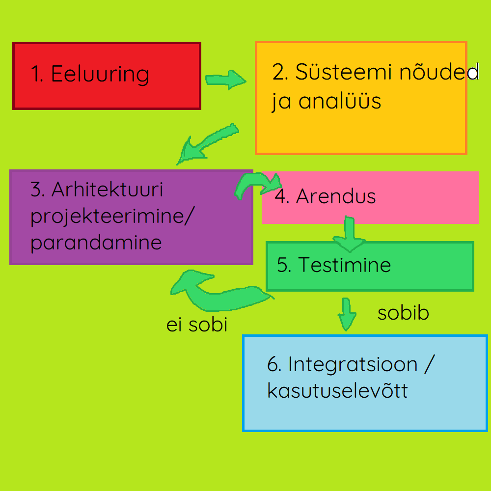

Iteratiivne arendusmudel on SDLC meetod, mille eesmärk on lahendada probleem,
mille tekitab tavaline jäikmudel. Jäikmudeli (nagu Waterfall) rakendamisel ei saa
muudatusi teha arenduse teostamise ajal. Iteratiivsed arendusmudelid aga lubavad seda
iga iteratsiooni vahel. Iteratiivne arendusmudel on ise ka tegelikult kombinatsioon
Iteratiivsest endast ja Inkrementaalmudelist, seda seetõttu, et ühe iteratsiooni ajal
saab kas olemasolevat struktuuri muuta (uus iteratsioon vanast) või lisada sellele
midagi juurde (uus inkrement vanale)
Iteratiivne arendusmudel sobib näiteks juhul kui klient või lõppkasutaja vajab
mõne funktsiooni teistsugust toimimist või midagi uut juurde.
Näide: On olemas MMORPG, kus mängija saab tappa koletisi, aga mängijad soovivad
ka teisi mängijaid tappa. Arendusmeeskond võtab kuulda ning arendab juurde meetodid
ja funktsioonid koos muude multimeediavaradega selle mängijale võimalikuks muutmiseks
Tulemuseks on see, et avastatakse 1v1 areen.
- Arendusmudel sobib ka sellistel juhtudel kus tingimused arenduseks on ühiselt määratud
ning kõikidele meeskonnaliikmetele selged ja ühiselt arusaadavad.
- Iteratiivne arendusmudel sobib ka olukordades, kus on turu ja/või konkurentsisurvet
mingis tootekategoorias. Võib olla kas siis uus arendus lastakse välja osalise
funktsionaalsusega või arendatakse vanale olemasolevale projektile uus osa juurde,
samuti osalise funktsionaalsusega.
- Saab kasutada kasutada arendusmudelit ka siis, kui projekt rakendab uudset metoodikat
või tehnoloogiat mingisuguse lahenduse arendamiseks, ning mille käigus meeskonnaliikmed
paralleelselt ka õpivad uut tööriista/metoodikat tundma
- Või siis saab kasutada, kui projekti eesmärk ajas muutub. Projekt algab ühe eesmärgiga
kuid kasutaja testimine näitab hoopis mõne kõrvalise funktsionaalsuse kasulikumat olekut
või kasutatakse toodet eeldatust täielikult teistmoodi. Sellisel juhul saab arendusmeeskond
suunata projekti ümber kasutajate poolt ettenäidatud käitlemise suunas (arendus sihitakse
sellele kuidas kasutaja kasutab, mitte kuidas arendajad seda ette nägid).

| Tugevused | Puudujäägid |
|
Paindlikkus, mis tagab kiired tulemused. Iteratiivses arenduses saab jaotada kliendi poolt tulnud probleemi või nõudes mitmeks väiksemaks osaks ning need omakorda üksikuteks funktsioonideks. see aitab valmis saada mingisuguse versiooni tootest üsna kiiresti Olenevalt projektist isegi tundidega või mõne päevaga. Selline tükeldamine lubab arendusmeeskonnal endale parajad probleemid ette seada |
Projekti edasises arendusjärgus või hilisemas etappis võivad muudatused (olenevalt selle suurusest ja kontekstist muutuda) kulukaks. Näiteks leitakse üles struktuuris fundamentaalne viga, ning see algne arendustöö on nüüd mitme erineva teenuse või funktsioonikihi all. Muudatused siin tähendab muudatusi ka kõikides teistes süsteemides, mis sellele tuginevad. |
|
Lihtne omaksvõtt ning kliendi rahulolu. Tänu pidevale uuendustele, on iteratiivne arendus arendajaile mugav lubades võtta poolepealt juurde uusi nõudeid või soove kliendilt, tagades kliendile sobivama toote. Iteratiivses mudelis leitakse ka vead suhteliselt ruttu üles ning nende parandamine tõhustab toote rakendamist ja omaksvõttu ka kasutajatele. Vigade parandus ise toimib ka jooksvalt. |
Kõrgem surve, et saada projektile kasutajaid, kes peavad siis toote kohta arendajatele tagasisidet andma. Kosemudelis saab kasutaja toote kätte alles arenduse lõpus, pärast mida muudatusi sisse viia ei ole võimalik. Kuna iteratiivses ei ole 100% nõudeid arendustöö alguses määratud, saadakse täiendavaid nõudeid lõppkasutajatelt arenduse ajal. |
|
Lihtne versioonihaldus. Iteratiivses arenduses on põhimõtteliselt iga uus väljalase uus versioon, mis aitab ära hoida katkise süsteemi leviku. Näiteks: Lastakse välja FPS mängus patch, mis rikub ära kasutaja hüppamisfüüsika (on lag), arendusmeeskond saab reageerida sellele kiiresti, keerates live väljajaske tagasi vanale versioonile, parandab vead ning siis laseb juba parandatud patchi uuesti välja. |
Eripärade ja omaduste kasutajani jõudmine. Tihtipeale peavad kasutajad uusi funktsioone arendusmeeskonnalt ise küsima, või ootama kuni arendusjärk selle funktsioonini, mis neil vaja on, jõuab. Uute versioonide puhul peavad kasutajad harjuma ka uute kasutajaliideste eripäradega, või koguni täielikult uue kasutajaliidesega. Uuega harjumine kasutajale võtab aega ja tahtmist |
|
Sobib organisatsioonidele, mis rakendavad erinevaid agiilseid arendus- metoodika praktikaid. Ta toimib väga hästi väiksemates agiilsetes rühmades, kus vastutus on jaotatav meeskonnaliikmete vahel ning mis võimaldab iteratsiooni läbida suhteliselt kergelt ja kiirelt. (Mugav arendajatele) |